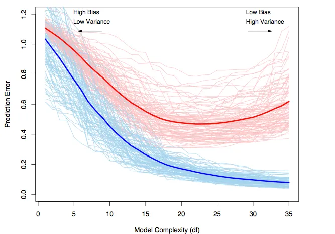
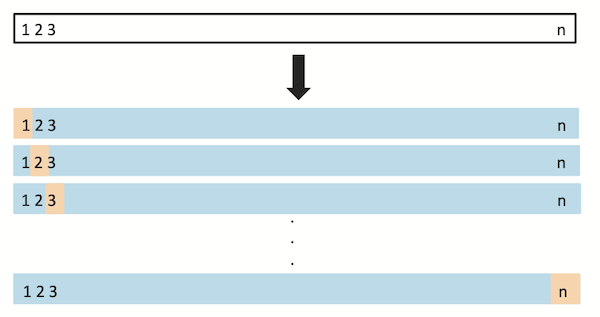

Overfitting and the bias-variance trade-off
Contents
Overfitting and the bias-variance trade-off#
Libraries#
## Imports
import pandas as pd
import numpy as np
import matplotlib.pyplot as plt
import statsmodels.api as sm
import statsmodels.formula.api as smf
import seaborn as sns
import scipy.stats as ss
%matplotlib inline
%config InlineBackend.figure_format = 'retina' # makes figs nicer!
Goals of this lecture#
Model complexity and overfitting.
Introducing the bias-variance trade-off.
Flexibility vs. interpretability.
Dealing with overfitting: cross-validation and more.
A question of complexity#
Statistical models range considerably in their complexity.
A linear model with one predictor is very simple.
A neural network with 100B parameters is very complex.
The complexity of a model affects how well it can fit a particular dataset––but also how likely it is to overfit.
The problem of overfitting#
Overfitting refers to building a model that fits too closely to a given dataset, and which will likely fail to generalize or predict unseen data.
Breaking it down:
“Fitting”: finding the parameters \(\beta_0, \beta_1, ... \beta_n\) for a model, using some dataset.
This will always involve some error, \(\epsilon\).
“Over”: relying too closely on observations in a given dataset, i.e., “fitting to noise”.
Every dataset has irreducible error that doesn’t generalize across samples.
Making the connection: samples vs. populations#
Any given dataset \(d_i\) is a sample of some larger population.
There are many possible samples, \(d_1, d_2, ..., d_n\).
As we know, samples have sampling error.
The job of a model is to recover the function \(f\) with parameters \(\beta_0, \beta_1, ... \beta_n\) that best describes \(d_i\).
Ideally, our model should fit \(d_i\) as well as it can, but not so closely that it fails to generalize to other datasets, e.g., \(d_j\).
Review: overfitting in action#
X = np.arange(0, 20, .5)
y = X
err = np.random.normal(scale = 8, size = len(X))
df = pd.DataFrame({'X': X, 'y_true': y, 'y_obs': y + err})
sns.scatterplot(data = df, x = "X", y = "y_obs")
plt.plot(X, y, linestyle = "dotted", color = "red")
[<matplotlib.lines.Line2D at 0x7fe17552d6a0>]
Fitting a complex polynomial#
Now, let’s fit a very complex polynomial to these data––even though we know the “true” relationship is linear (albeit noisy).
Note: Try regenerating the error \(\epsilon\) and see how much the fit function changes!
### Very complex polynomial
mod_p10 = smf.ols(data = df, formula = "y_obs ~ X + I(X**2) + I(X**3) + I(X**4) + I(X**5) + I(X**6) + I(X**7) + I(X**8) + I(X**9) + I(X**10)").fit()
### Now we have a "better" fit––but it doesn't really reflect the true relationship.
sns.scatterplot(data = df, x = "X", y = "y_obs")
plt.plot(X, mod_p10.predict(), linestyle = "dotted", color = "red")
[<matplotlib.lines.Line2D at 0x7fe150312850>]
The bias-variance trade-off#
In general, statistical models display a trade-off between their:
Bias: high “bias” means a model is not very flexible.
E.g., linear regression is a very biased model, so it cannot fit non-linear relationships.
Variance: high “variance” means a model is more likely to overfit.
E.g., polynomial regression is very flexible, but it’s more likely to fit to noise––exhibiting poor generalization across samples.
Bias, variance, and the bed of Procrustes#
Imagine you’re a weary traveler walking from Athens to Eleusis. Along the way, you encounter a smith named Procrustes, who invites you to stay the night in his home––he has a spare bed.
There’s just one catch: if you don’t fit the bed exactly–if you’re too long, or too short–he’ll have to make you fit. That could mean cutting off your legs (if you’re too long) or using a hammer to stretch you out (if you’re too short). The important thing is that you fit the bed exactly.
Procrustean models: the problem of high bias#
The term “Procrustean” refers to adopting a “one-size-fits-all” mentality.
This is a good description of the problem of model bias:
“Bias” refers to the error that is introduced by approximating a real-life problem, which may be extremely complicated, by a much simpler model.
Definition from Introduction to Statistical Learning.
Check-in#
What would be an example of a model with high bias?
Linear regression has high bias#
A classic example of a high bias model is linear regression.
By “biased”, we mean that linear regression has a strong assumption about the shape of the function \(f\) it is trying to model.
Specifically, linear regression assumes the function is linear.
df_anscombe = sns.load_dataset("anscombe")
sns.lmplot(data = df_anscombe, x = "x", y = "y", col = "dataset")
<seaborn.axisgrid.FacetGrid at 0x7fe1602fb790>
An Intercept-only model also has high bias#
An
Intercept-only model is one that predicts \(Y\) using simply the mean of \(Y\), i.e., \(\bar{Y}\).
Such a model has extremely high bias––it predicts a constant value, \(\bar{Y}\), regardless of \(X\).
plt.scatter(X, y + err, alpha = .5)
plt.axhline(y.mean(), linestyle = "dotted")
<matplotlib.lines.Line2D at 0x7fe160375700>
Polynomial regression is low(er) bias#
A polynomial equation can fit a larger number of functions. That is, polynomial regression is more flexible.
This means that polynomial regression is lower bias than ordinary linear regression.
Polynomial regression is low(er) bias#
A polynomial equation can fit a larger number of functions. That is, polynomial regression is more flexible.
This means that polynomial regression is lower bias than ordinary linear regression.
X = np.arange(1, 20)
y = X + X ** 2 + X **3
plt.scatter(X, y)
<matplotlib.collections.PathCollection at 0x7fe160771340>
Neural networks are (usually) even lower bias#
An artificial neural network (like ChatGPT) with sufficient parameters can in principle learn any differentiable function.
That is, neural networks are extremely flexible––they also tend to be very complex and hard to interpret.
Variance: the other side of flexibility#
A flexible model can fit more functions, but it might also exhibit more variance:
“Variance” refers to the amount by which \(f\) would change if we estimated it using a different training data set. Since the training data are used to fit the statistical learning method, different training data sets will result in a different \(f\). But ideally the estimate for \(f\) should not vary too much between training sets…In general, more flexible statistical methods have higher variance.
Definition from Introduction to Statistical Learning.
Revisiting samples vs. populations#
Any given dataset \(d_i\) is a sample of some larger population.
There are many possible samples, \(d_1, d_2, ..., d_n\).
As we know, samples have sampling error.
The job of a model is to recover the function \(f\) with parameters \(\beta_0, \beta_1, ... \beta_n\) that best describes \(d_i\).
Ideally, our model should fit \(d_i\) as well as it can, but not so closely that it fails to generalize to other datasets, e.g., \(d_j\).
Making variance concrete#
One way to think about variance is: how much does a given parameter \(\beta_i\) change across samples?
If your parameters change a lot across samples, your model has higher variance.
If the parameters don’t change much, your model has lower variance.
Bias-variance trade-off#
The bias-variance trade-off is that models with low bias tend to have higher variance, and models with low variance tend to have high bias.
Hard to optimize for both!
More flexible models tend to have low bias, but high variance.
Less flexible models tend to have high bias, but low variance.
Let’s see this trade-off in action.
Step 1: Define our “true” function#
Let’s define our true function, which we’ll take to be a polynomial with degree \(3\).
np.random.seed(10)
def f(X):
return 2 + X * 3 + .5 * X **2 + .2 * X ** 3
X = np.arange(-10, 10, .005)
plt.scatter(X, f(X))
<matplotlib.collections.PathCollection at 0x7fe160909e20>
Step 2: Create a “training” sample#
Now, let’s sample from this underlying function––and add normally distributed noise.
sample_y = f(X) + np.random.normal(scale = 500, size = len(X))
plt.scatter(X, sample_y, alpha = .5)
plt.plot(X, f(X), color = "red", linestyle = "dotted") ## true function
[<matplotlib.lines.Line2D at 0x7fe150f8cc10>]
Step 3: Fit different polynomials#
Now, we’ll fit a range of \(p\) polynomials, ranging in complexity from \(p = 1\) to \(p = 10\).
df = pd.DataFrame({'X': X, 'y_obs': sample_y})
len(df)
4000
formula = "y_obs ~ X"
results = []
for p in range(1, 11):
formula = formula + " + I(X**{p})".format(p = p)
mod = smf.ols(data = df, formula = formula).fit()
results.append({
'p': p,
'r2': mod.rsquared,
'mse': sum(mod.resid**2)/len(X)
})
df_results = pd.DataFrame(results)
Step 4: Look at results#
To analyze our results, let’s plot \(MSE\), i.e., the mean squared error.
In general, error decreases as we add complexity (i.e., higher \(p\)).
Can anyone think of any issues here?
sns.lineplot(data = df_results, x = "p", y = "mse")
<AxesSubplot:xlabel='p', ylabel='mse'>

Step 5: Test on another “sample”#
Our model improves with higher \(p\), but how well does this generalize to other samples?
I.e., is it overfitting.
To test, we should create new samples with different error.
We can train on the original sample, and test on the new sample.
df['y_obs2'] = f(X) + np.random.normal(scale = 500, size = len(X))
sample_y = f(X) + np.random.normal(scale = 200, size = len(X))
plt.scatter(X, sample_y, alpha = .5)
plt.plot(X, f(X), color = "red", linestyle = "dotted") ## true function
[<matplotlib.lines.Line2D at 0x7fe175d75e80>]

Step 6: Repeat train/test with different \(p\)#
formula = "y_obs ~ X"
results = []
for p in range(1, 11):
formula = formula + " + I(X**{p})".format(p = p)
## Train model
mod = smf.ols(data = df, formula = formula).fit()
## Test on new sample
new_residuals = mod.predict(df) - df['y_obs2']
results.append({
'p': p,
'r2': mod.rsquared,
'mse_train': sum(mod.resid**2)/len(X),
'mse_test': sum(new_residuals**2)/len(X)
})
df_results = pd.DataFrame(results)
Step 7: Look at results#
Now, let’s look at our results on the test set––i.e., the data the model didn’t get to see. What do we notice?
sns.lineplot(data = df_results, x = "p", y = "mse_test")
plt.axvline(x = 3, linestyle = "dotted", color = "red")
plt.ylabel("MSE (Test Set)")
Text(0, 0.5, 'MSE (Test Set)')

Step 7: Comparing train/test error#
Train error usually decreases as \(p\) increases.
But test error will not decrease monotonically!
plt.plot(df_results['p'], df_results["mse_test"], label = "MSE (Test)")
plt.plot(df_results['p'], df_results["mse_train"], label = "MSE (Train)")
plt.axvline(x = 3, linestyle = "dotted", color = "red")
plt.ylabel("MSE")
plt.legend()
<matplotlib.legend.Legend at 0x7fe1756d3b50>
Trade-off illustrated#
Red line = test error.
Blue line = train error.

Cross-validation#
To avoid overfitting, researchers often use cross-validation: a technique that involves fitting a model on one portion (or “fold”) of a dataset and testing the model on another portion (or “fold”).
Basic intuition:
More flexible models (higher \(p\)) will generally fit better on training data.
However, this is often due to overfitting.
Better to test on held-out set (i.e., data a model hasn’t seen before).
An analogy: cross-validation in the classroom#
As a rough analogy, a teacher shouldn’t give students the exact exam questions before the exam.
The students will “overfit” to those questions.
Instead, a teacher can give students a guide of what kinds of questions will be on the exam.
Then, the exam itself tests conceptually similar knowledge.
I.e., a test of generalization.
Using train_test_split#
The simplest approach is to split your data into two sub-portions:
A “training” portion: used to fit the model.
A “testing” portion: used to test the model.
This can be done using the train_test_split function from the sklearn package.
from sklearn.model_selection import train_test_split
### train_test_split(df_name, ...)
train_test_split in action#
To use train_test_split, you must specify (in addition to the dataset):
train_size: what proportion of the data to use for training?test_size: what proportion of the data to use for testing?
You can also optionally set a random_state, which ensures that the train_test_split is consistent––i.e., the same split each time.
df_gapminder = pd.read_csv("data/viz/gapminder_full.csv")
df_gapminder.shape
(1704, 6)
df_train, df_test = train_test_split(df_gapminder,
train_size = 0.7,
test_size = 0.3,
random_state = 20)
print(df_train.shape)
print(df_test.shape)
(1192, 6)
(512, 6)
Check-in#
How many observations (roughly) should we expect in our train/test datasets, respectively, if we used a 50/50 split on df_gapminder?
### Your code here
Solution#
With a 50/50 split, we expect an equal number of observations in our train and test datasets.
df_train50, df_test50 = train_test_split(df_gapminder,
train_size = 0.5,
test_size = 0.5,
random_state = 1)
print(df_train50.shape)
print(df_test50.shape)
(852, 6)
(852, 6)
Comparing our train/test sets#
We can think of our train/test datasets as samples of a broader population––the original dataset.
Crucially, because we randomly split our data, these are random samples!
### Means/variance won't be exactly the same
print(df_train['gdp_cap'].mean())
print(df_test['gdp_cap'].mean())
7172.602156627266
7314.796046261329
### Neither will correlations, etc.
print(ss.pearsonr(df_train['gdp_cap'], df_train['life_exp'])[0])
print(ss.pearsonr(df_test['gdp_cap'], df_test['life_exp'])[0])
0.5810702334558102
0.5895365116149536
Step 1: training#
To train a model, first fit it to your training set.
mod_train = smf.ols(data = df_train, formula = "life_exp ~ gdp_cap").fit()
mod_train.params
Intercept 54.027244
gdp_cap 0.000766
dtype: float64
### Compare model predictions to real data
plt.scatter(mod_train.predict(), df_train['life_exp'], alpha = .5)
plt.xlabel("Predicted Life Expectancy")
plt.ylabel("Actual Life Expectancy")
Text(0, 0.5, 'Actual Life Expectancy')
Step 2: testing#
To test a model, use your already-fit model to generate predictions for your test set.
y_pred_test = mod_train.predict(df_test)
y_pred_test.shape
(512,)
plt.scatter(y_pred_test, df_test['life_exp'], alpha = .5)
plt.xlabel("Predicted Life Expectancy (Test)")
plt.ylabel("Actual Life Expectancy (Test)")
Text(0, 0.5, 'Actual Life Expectancy (Test)')
Step 3: Compare \(MSE\) for train vs. test portion#
Typically, your prediction error should be lower on the train set than the test set.
mse_train = sum((mod_train.predict(df_train) - df_train['life_exp'])**2)/len(df_train)
print(mse_train)
107.82480636789772
mse_test = sum((mod_train.predict(df_test) - df_test['life_exp'])**2)/len(df_test)
print(mse_test)
114.8822184353271
Step 4: Validating across multiple splits#
To check this, we can perform many splits with different random_states, and keep track of the \(MSE\) for the training/testing set each time.
results = []
for rs in range(1, 101):
df_train, df_test = train_test_split(df_gapminder,
train_size = 0.7,
test_size = 0.3,
random_state = rs)
mod_train = smf.ols(data = df_train, formula = "life_exp ~ gdp_cap").fit()
mse_train = sum((mod_train.predict(df_train) - df_train['life_exp'])**2)/len(df_train)
mse_test = sum((mod_train.predict(df_test) - df_test['life_exp'])**2)/len(df_test)
results.append({'rs': rs, 'mse_train': mse_train, 'mse_test': mse_test})
df_results = pd.DataFrame(results)
df_results.head(2)
| rs | mse_train | mse_test | |
|---|---|---|---|
| 0 | 1 | 110.149390 | 109.780933 |
| 1 | 2 | 103.905915 | 124.792988 |
Step 5: Comparing \(MSE\) for train/test sets#
The mean \(MSE\) is higher for our test sets than our train sets.
print(df_results['mse_train'].mean())
print(df_results['mse_test'].mean())
109.3436122481434
112.67709136443473
Leave-one-out cross-validation#
With leave-one-out cross-validation (LOOCV), we select one observation as our “test” set, then train our model on the remaining data. We do this \(n\) times (for each point in the dataset.
This is like doing \(n\) train/test splits, where we ensure that every observation gets a shot at being the “test” observation.

Screenshot from The Elements of Statistical Learning.
LOOCV in Python#
Unlike train_test_split, the LeaveOneOut function gives you indices for each item in your dataset.
from sklearn.model_selection import LeaveOneOut
loo = LeaveOneOut()
loo.get_n_splits(df_gapminder)
1704
for i, (train_index, test_index) in enumerate(loo.split(df_gapminder)):
print(f"Fold {i}:")
print(f" Train: index={train_index}")
print(f" Test: index={test_index}")
Using LOOCV#
results = []
for i, (train_index, test_index) in enumerate(loo.split(df_gapminder)):
df_train = df_gapminder.iloc[train_index]
df_test = df_gapminder.iloc[test_index]
mod_train = smf.ols(data = df_train, formula = "life_exp ~ gdp_cap").fit()
mse_train = sum((mod_train.predict(df_train) - df_train['life_exp'])**2)/len(df_train)
mse_test = sum((mod_train.predict(df_test) - df_test['life_exp'])**2)/len(df_test)
results.append({'rs': rs, 'mse_train': mse_train, 'mse_test': mse_test, 'life_exp': df_test['life_exp'].iloc[0]})
df_results = pd.DataFrame(results)
df_results.shape ### A row for each observation
(1704, 4)
Evaluating results#
Again, we see that \(MSE\) tends to be higher on the test set.
print(df_results['mse_train'].mean())
print(df_results['mse_test'].mean())
109.93798502087066
112.04420283606598
K-Fold Cross-validation#
With K-fold cross-validation, we split our data into \(k\) equally-sized folds; we then randomly select fold as the “test” set and the other folds as “training” sets. We repeat this procedure \(k\) times.
When \(k = 2\), this is like doing a
train_test_splitwith a 50/50 split.
Check-in#
When \(k = n\), what does k-fold cross-validation amount to?
When \(k = n\)#
When \(k = n\), K-fold cross-validation is the same as LOOCV!
Using KFold in Python#
from sklearn.model_selection import KFold
kf = KFold(n_splits=10, random_state = 1, shuffle = True)
kf.get_n_splits(df_gapminder)
10
Using KFold on a dataset#
results = []
for i, (train_index, test_index) in enumerate(kf.split(df_gapminder)):
df_train = df_gapminder.iloc[train_index]
df_test = df_gapminder.iloc[test_index]
mod_train = smf.ols(data = df_train, formula = "life_exp ~ gdp_cap").fit()
mse_train = sum((mod_train.predict(df_train) - df_train['life_exp'])**2)/len(df_train)
mse_test = sum((mod_train.predict(df_test) - df_test['life_exp'])**2)/len(df_test)
results.append({'rs': rs, 'mse_train': mse_train, 'mse_test': mse_test, 'life_exp': df_test['life_exp'].iloc[0]})
df_results = pd.DataFrame(results)
df_results.shape ### A row for each observation
(10, 4)
Evaluating results#
Again, we see that \(MSE\) tends to be higher on the test set.
print(df_results['mse_train'].mean())
print(df_results['mse_test'].mean())
109.84441939854291
111.77229749778971
Conclusion#
Statistical models can be more or less flexible.
This flexibility relates to the bias-variance trade-off:
More flexible models: tend to be high variance, low bias.
Less flexible models: tend to be low variance, high bias.
Ideally, we want a flexible model that also doesn’t overfit.
To account for overfitting, we can use cross-validation.